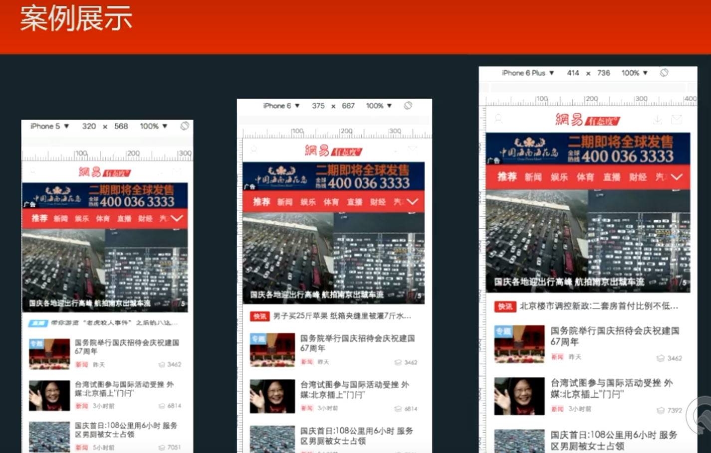
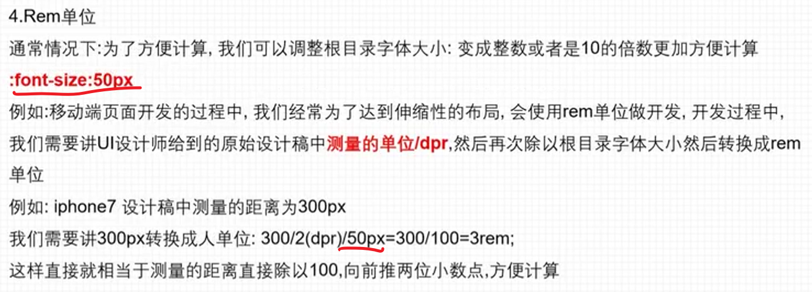
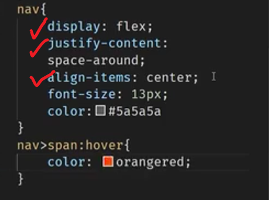

一、html实战笔记
1、MDN前端神书 (html和css都有，各种各样的)
直接百度官方搜索，有文档
2、Tailwind CSS
3、Bootstrap
4、W3school
5、easyicon（javaSwing那块知道的）
2、三大标签元素以及setion标签的了解
/* 转换成块元素，才可设置高度 */
display: block;
很多人经常会把块元素、行内块元素、行内元素的知识混淆掉，今天我归纳下，做个小结：
1、块元素独占一行，而行内块元素和行内元素可以和别人共处一行；
2、常见的块元素有div、p、h1、ol、ul、dl、tabel、form；
3、常见的行内元素有a、span、i、strong、em、label、cite、code；
4、常见的行内块元素有img、input、select、textarea、button；
5、行内块元素的特性和块元素完全一样，除了一点：它不独占一行；
6、块元素、行内块、行内元素都有各自的盒模型。三者的盒模型有相同的地方，也有不同的地方；
7、行内元素不能设置“width”和“height”，块元素和行内块元素可以设置“width”和“height”；
8、行内元素在水平方向上的padding、border、margin的特性和块元素一模一样；
9、行内元素在垂直方向上的padding、border、margin的特性和块元素很不一样：padding和border可以设置，但是不参与布局；margin设置都不能设置；
10、行内元素不能包含块元素，除了a元素； 11、行内元素可以包含别的行内元素；
12、行内元素脱离文档流后，会变成块元素；
13、可以给行内元素设置背景图片（“background-image”）；
14、块元素的宽默认是父元素宽的100%，高由内容撑起来；
15、行内元素的宽和高都由内容撑起来；
16、其实块元素、行内块元素、行内元素之间可以互换，只需要给display属性赋不同的值（block、inline-block、inline）就可以了。
3、html5自定义标签名
这说明，浏览器对待自定义元素，就像对待标准元素一样，只是没有默认的样式和行为。这种处理方式是写入 HTML5 标准的。
“自定义元素的名字必须包含一个破折号（-）
所以<x-tags>、<my-element>和<my-awesome-app>都是正确的名字
而<tabs>和<foo_bar>是不正确的。这样的限制使得 HTML 解析器可以分辨那些是标准元素，哪些是自定义元素。”
4、header标签
这个标签里面必须包含一个h1之类的标题标签
响应式布局、自适应布局
bookstrap响应式框架的网站：页面窗口拉大拉小显示页面内容的其中一些
在不同情况下rem是有一个缩放功能
宽度和高度都不要写死
px写死
rem写活 %写活
设备的划分情况为：
小于768的为超小屏幕（手机）
768~992之间的为小屏设备（平板）
992~1200的中等屏幕（桌面显示器）
大于1200的宽屏设备（大桌面显示器）
实现网页自适应不同尺寸 屏幕（PC端）
其中1920就是UI设计稿提供的宽度，这样就算是屏幕不是1920也可以根据比例放大缩小，实现百分百还原设计稿。
对应的css样式中 1rem=100px; 根据设计稿效果还原即可
基于等比缩放的大屏自适应方案
html页面如何不同设备自适应缩放比例
width=device-width ：表示宽度是设备屏幕的宽度 height=device-height ：表示宽度是设备屏幕的宽度 initial-scale=1.0：表示初始的缩放比例(初始规模为1.0倍，即原始大小) minimum-scale=0.5：表示最小的缩放比例 maximum-scale=2.0：表示最大的缩放比例 user-scalable=yes或者1：表示用户是否可以调整缩放比例(no或者0：表示不可调整缩放比例) target-densitydpi：一个屏幕像素密度是由屏幕分辨率决定的，通常定义为每英寸点的数量（dpi）。Android支持三种屏幕像素密度：低像素密度，中像素密度，高像素密度。一个低像素密度的屏幕每英寸上的像素点更少，而一个高像素密度的屏幕每英寸上的像素点更多。Android Browser和WebView默认屏幕为中像素密度。
UI设计稿和电脑屏幕尺寸不同
前端页面在PC端不同分辨率屏幕的适配—-比例缩放
通常UI提供PC端项目的设计稿尺寸都是1920*1080(16:9)的，但是电脑显示屏的分辨率是不固定的，所以按照这个固定像素做出来的前端页面在不同的显示屏上可能会出现页面显示不全或者是页面无法充满屏幕的情况。此时，“人美心善”的客户就会提出要求，要让页面充满屏幕。
作者：罖卋罖 链接：https://juejin.cn/post/7083702725690523685 来源：稀土掘金 著作权归作者所有。商业转载请联系作者获得授权，非商业转载请注明出处。
【马面案例】 后面学到vue会有更多的适配方案
初始化CSS样式
各种基本网页都会有的
如何让小盒子在大盒子中垂直和水平居中
只有一行，要来实现小盒子在大盒子中上下居中效果让height=line-height即可
在小盒子样式中写{
height:
line-height:
}
页面布局及设备适配【千锋教育】
（不管分配率怎么变，布局都不会乱是不是）
100%布局（弹性布局）：不管分辨率怎么改变，位置都不会变，屏幕大间距也大文字大小也变化，会比例失调
“拉勾”案例
rem布局（等比例缩放布局）：
“网易”案例

rem是根据html的字体（根元素大小）变化而动态变化的，rem是一个相对单位
html {
font-size: 16px;
}
如果需要动态的对html的字体进行改变，就需要通过js进行操作
web端单位：px是写死的单位大小
移动端单位：是比例
通过vm实现移动端页面实战布局
拉勾网实战
PC端转化成手机端
如何获取设计稿

点击上图两个，这是就可以直接下载设计稿了，用PS是打开
PC端转移动端问题
不可以双击放大了
关闭ul自带的小圆点、取消列表项的样式
关闭img自带的边框、取消图片下边的留白
a标签的下划线给取消掉
取消input标签的外边线
再添加上窗口自适应
同时让body容器去触发弹性盒子，触发弹性盒子之后修改主轴方向就好了
利用弹性盒子内容完成布局就可以
1、设计稿出自于哪个屏幕
用PS测量得得到宽度为1920px（像素）就知道出自于哪个屏幕了，就可以得到设备像素比必然是巴拉，也就是dpr=巴拉
2、头部导航
也就相当于，从设计稿里每次测量的物理像素都需要把dpr除掉

【在这开始，之后的所有盒子大小尺寸都要设置成 物理像素/dpr （px）】
但是你给了一个固定的宽度，让宽度自适应，始终占屏幕的一整行（这里的宽度可以注释掉）
设置文本水平居中对齐 text-align:center，然后设置height和line-height高度一样
触发弹性盒子display:flex，再设置里面的两个小盒子两端贴边对齐 justify-content:space-between;，想让左边和右边都有间距，设置大盒子的内边距padding:0px 17px;（上下、左右），再让文本垂直居中对齐（设置height和line-height高度一样）
找到大盒子(nav)中的第一个小盒子(span)
nav>span:nth-child(1){巴拉巴拉样式}
3、主体区域布局
让大盒子中的几个小盒子在一行内显示 display:flex;
占剩余宽度或者剩余高度的所有用 flex:1;
4、尾部区域
打底裤实战（rem布局）
1、认识一些单位

屏幕切换成横屏，vmin在最小值的那一个方向作为参照物，所以在这里屏幕切换时，红条的高度不变
2、开始布局

3、导航区域
主轴上对齐，两端环绕，还有flex:1;实现
接下来用两端对齐完成

4、主体区域
flex-wrap:wrap 一行放不下了，必要时可以自动换行
5、flexble.js布局
PC端页面如何适配不同屏幕大小
PC端页面适应不同分辨率
（1）如何进行PC端多屏适配
（2）多屏适配的几种方法：
使用媒体查询，如 bootstrap等框架 制作设计图的时候，给一个固定的宽度，如1200，背景使用纯色，或者大背景图 使用rem 其他 这里介绍一下 rem 适配方案：
能够流畅的适配不同分辨率的屏幕，并且开发效率跟使用px开发没什么区别，只是多了将px转化成rem的css函数
效果图如下（可以看到在不同的分辨率下，依然可以保持较好的布局）：
（3）使用上述方案的步骤：
1、根据设计稿算出 px转化成rem 的缩放比（这里我的设计稿是 1920px，然后上面导航栏的字体大小为34px，所以都以这个为基准，算出缩放比为 56.47，然后反过来除就等于导航栏字体大小，其他的图片、文字、div都按照这个去算，不懂得自己动手敲一遍，然后使用px的地方用这个函数代替就好了，这里使用的是 scss）
$ratio: 1920 / 56.47; // 缩放比 34
// 返回对应屏幕下的rem值
@function px2rem($px){
@return $px / $ratio + rem
}
2、样式
样式书写如下（ px2rem(70) 等于 1920px屏幕下的70px）：
.title {
position: absolute;
top: px2rem(70);
color: $title-color;
font-size: $font-size-title;
}
3、再在html页面加上如下js代码，监听resize事件，动态设置 rem 中 根字体的大小，那么使用rem的元素会根据 根字体 的大小变化而变化
<script>
// 获取当前设备的宽度，设置rem的根字体大小
let width = window.innerWidth
width = width <= 1200 ? 1200 : width
const htmlObj = document.getElementsByTagName('html')[0]
htmlObj.style.fontSize = width / 56.47 + 'px'
// 对resize事件进行浏览器兼容处理
if(document.createEvent) {
var event = document.createEvent("HTMLEvents");
event.initEvent("resize", true, true);
window.dispatchEvent(event);
} else if(document.createEventObject) {
window.fireEvent("onresize");
}
// 监听页面resize事件，重新设置rem的根字体大小
window.onresize = function() {
let width = window.innerWidth
width = width <= 1200 ? 1200 : width
htmlObj.style.fontSize = width / 56.47 + 'px'
};
</script>
flexible代码
<!DOCTYPE html>
<html lang="en">
<head>
<meta charset="UTF-8">
<title>版心布局</title>
<meta name="viewport"
content="width=device-width, initial-scale=1.0,maximum-scale=1,minimum-scale=1,user-scalable=no">
<script> (function flexible(window, document) { var docEl = document.documentElement; var dpr = window.devicePixelRatio || 1; function setBodyFontSize() { if (document.body) { document.body.style.fontSize = 12 * dpr + "px"; } else { document.addEventListener("DOMContentLoaded", setBodyFontSize); } } setBodyFontSize(); function setRemUnit() { var rem = docEl.clientWidth / 10; docEl.style.fontSize = rem + "px"; } setRemUnit(); window.addEventListener("resize", setRemUnit); window.addEventListener("pageshow", function (e) { if (e.persisted) { setRemUnit(); } }); if (dpr >= 2) { var fakeBody = document.createElement("body"); var testElement = document.createElement("div"); testElement.style.border = ".5px solid transparent"; fakeBody.appendChild(testElement); docEl.appendChild(fakeBody); if (testElement.offsetHeight === 1) { docEl.classList.add("hairlines"); } docEl.removeChild(fakeBody); } })(window, document); </script>
<style>
* {
margin: 0;
padding: 0;
box-sizing: border-box;
}
</style>
</head>
<body>
<div>
</div>
<script>
window.onload = function () {
setFont();
window.addEventListener("resize", function () {
setFont();
})
function setFont() {
var div = document.querySelector("div");
div.style.fontSize = document.querySelector("html").style.fontSize;
div.innerHTML = "html的字体大小为" + document.querySelector("html").style.fontSize;
}
}
</script>
</body>
</html>
二、CSS
1、padding四个值的顺序
2、margin四个值的顺序
3、transform:translate()方法
默认情况下，坐标轴原点为屏幕的左上角
结论：当移动的数是正数时，在Y轴方向上，相对原来的位置向下移动，在X轴方向上，相对原来的位置向右移动。
结论：当移动的数是负数时，在Y轴方向上，相对原来的位置向上移动，在X轴方向上，相对原来的位置向左移动。
实战代码，先改变了坐标轴原点，再写偏移位置
top: 50%;
left: 50%;
transform: translate(-50%, -50%);
//弹性布局，垂直水平居中
display: flex;
flex-wrap: wrap;
align-items: center;
justify-content: center;
4、CSS实现盒子水平居中、垂直居中和水平垂直都居中
5、高级的边框样式
（1）颜色
::v-deep .el-input__inner {
background-color: transparent !important;
border-color:#80ffff;
box-shadow: 1px 1px 5px 1px RGB(128,255,255,0.8) inset;
height: 30px;
}
（2）box-sizing: border-box;
解决CSS中padding（内边距）margin（外边距）撑大盒子的问题
拓展
box-sizing: content-box（为内容的宽高）（实际上,还有padding+边框+margin撑大盒子）
|border-box（为内容+padding+边框的总宽高）
|inherit（从父元素继承 box-sizing 属性）;
...